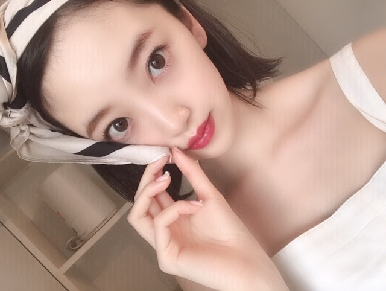
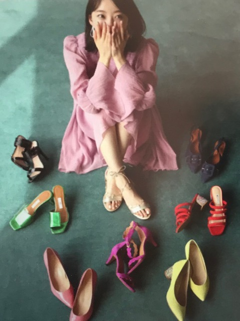
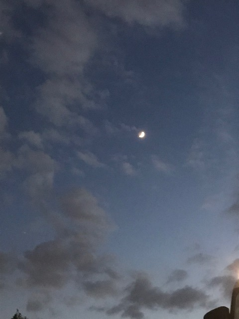

2019/0712Fri宇宙にいってみたい
ar発売日です！


靴とバッグってわくわくするしときめくし本当に大事なアイテム！！
みてね☺︎

わからなかったことがわかったり
わかってたはずのことがわからなくなったり
人生の中で感じる自分の気持ちは想像以上に複雑で単純で
でもこれかもしれないって思えるなにかに
出会えたときは
それを信じて突き進むしかなくて
私も、私が、頑張らなきゃ
私の為にも誰の為にもならないなーと
スピッツさんの曲が22歳のわたしにぴったり、というかとても心地がよくて毎日聴かせていただいています
群青っていう曲が特にすき☺︎
とにかく海が見たい、明日も未来も好きになりたい。
素敵な歌詞です
あとは、
君が思い出になる前に
冷たい頬
水色の街
正夢 がすき
映画 ホットギミック ガールミーツボーイ
公開中です☺︎
たくさんの素敵な感想ありがとうございます！
初主演、初出演の映画が山戸監督の映画で本当に良かったです。これからもどんどん、まだ見ぬ映像の世界へ入っていきたいなあ。簡単なことではないと分かっているけど、それでも私には必要なこと。
まだ観てないよ〜という方は是非、大きなスクリーン、大きな音で観てください！
この間、絢音とみり愛が観に行ってくれて
観る前にも観た後にもたくさんメールで話してくれて凄く嬉しかったなぁ☺︎
飛鳥も美月も観てくれて、観たよって話してくれて本当に嬉しいです。
私も劇場行かなきゃ。
そして今日まで！新宿にあるBEAMS JAPAN4階にて、
ホットギミックの写真展とグッズ販売がされています！
詳しくは↓
そして今日まで！新宿にあるBEAMS JAPAN4階にて、
ホットギミックの写真展とグッズ販売がされています！
詳しくは↓
tシャツもキャップもトートバッグもオシャレすぎて
私も愛用中〜♪
めちゃくちゃおしゃれなんです☺︎
ピンクキャップは、劇中の初ちゃんとおそろいになるみたいです
めちゃくちゃおしゃれなんです☺︎
ピンクキャップは、劇中の初ちゃんとおそろいになるみたいです
写真展は、素敵な写真を小野さんが沢山撮ってくださいました。私の家族も先日観に行ったみたいです。笑
グッズを買って帰ってきました。笑
今度握手会でtシャツ着てキャップ被ろうかな〜✨
明日は音楽の日 です！
観てね！
では☺︎
2019/07/12 11:30
コメント(275)
チャァオ～～!☆彡
え❕❔・・・
みおちゃん、宇宙旅行ですかぁ～～⤴️⤴️❕❔❤️❤️❤️❤️❤️笑顔
すごぉ～～～⤴️⤴️い❕❤️❤️❤️❤️❤️笑顔
☆大人しい、おすまし！より☆彡
未央奈さん今日も ありがとう ✨。明日の音楽の日だね楽しみにしてます見るから｡未央奈さん頑張って 。
ホットギミック、夏休みに観に行くよー！
堀ちゃんの独特なセンスが大好きです
堀ちゃんの独特なセンスが大好きです
おでこ未央奈ブログ更新ありがとう！
宇宙行ってみたいよね。僕は物理好きで宇宙好きなんだ。
ar買ったよ！
どのページの未央奈もオシャレで可愛くてデートしたくなっちゃう。
わからなかったことがわかったりわかってたはずのことがわからなくなったりって僕にもあるよ。
そんな気持ちをそう綴ってくれた未央奈にありがとう。
スピッツ良いよね。僕も好きだよ。
群青は聴いたことなかったけど良い曲だね。12弦ギターで弾きたい。
未央奈がこういう詞が好きだって知れるの嬉しいな。
ホットギミックはもっと解釈を考えたいし、また見に行く予定。何より未央奈が主演を務める姿を大きなスクリーンで2時間見られるって最高。
写真展は行けなかったけどTシャツ注文したよ！
では！
宇宙行ってみたいよね。僕は物理好きで宇宙好きなんだ。
ar買ったよ！
どのページの未央奈もオシャレで可愛くてデートしたくなっちゃう。
わからなかったことがわかったりわかってたはずのことがわからなくなったりって僕にもあるよ。
そんな気持ちをそう綴ってくれた未央奈にありがとう。
スピッツ良いよね。僕も好きだよ。
群青は聴いたことなかったけど良い曲だね。12弦ギターで弾きたい。
未央奈がこういう詞が好きだって知れるの嬉しいな。
ホットギミックはもっと解釈を考えたいし、また見に行く予定。何より未央奈が主演を務める姿を大きなスクリーンで2時間見られるって最高。
写真展は行けなかったけどTシャツ注文したよ！
では！
ホットギミック既に３回観に行ってきました。
１つの作品をこんなに観に行ったのは初めてです。
これからも未央奈さんをぜひスクリーンで観たいな！
スピッツさんの君が思い出になる前には僕も好きです。
ツアーもまだこれから頑張ってね
１つの作品をこんなに観に行ったのは初めてです。
これからも未央奈さんをぜひスクリーンで観たいな！
スピッツさんの君が思い出になる前には僕も好きです。
ツアーもまだこれから頑張ってね
更新ありがとう。
写真かわいい
音楽の日、体調に気をつけて
頑張ってね

大好き応援してます
写真かわいい
音楽の日、体調に気をつけて
頑張ってね
大好き応援してます
未央奈ちゃん、お疲れさまです。
将来、お気に入りのスピッツさんの曲が
流れた時に、未央奈ちゃんは22歳のときの
ことを思い出すんだろうな。
お気に入りの曲にはそのときの
思い出の場面がつきまといますね。
その場面の中に僕もいれたらいいのになぁ、
なんて思っちゃいます！！！
これからも未央奈ちゃんらしく
頑張ってくださいね！！！
応援しています！！！
将来、お気に入りのスピッツさんの曲が
流れた時に、未央奈ちゃんは22歳のときの
ことを思い出すんだろうな。
お気に入りの曲にはそのときの
思い出の場面がつきまといますね。
その場面の中に僕もいれたらいいのになぁ、
なんて思っちゃいます！！！
これからも未央奈ちゃんらしく
頑張ってくださいね！！！
応援しています！！！
こんばんは！
ブログ更新ありがとうございます
スピッツの楽曲良いですね✨私も好きです。
arの表紙飾ってもう１ヶ月経つんだね✨
買わないとね～楽しみ❗
明日の音楽の日も楽しみ。絶対に見るね！
乃木坂は何時くらいなんだろ⁉️
体調に気を付けて頑張ってくださいね～✴️
応援してます
ブログ更新ありがとうございます
スピッツの楽曲良いですね✨私も好きです。
arの表紙飾ってもう１ヶ月経つんだね✨
買わないとね～楽しみ❗
明日の音楽の日も楽しみ。絶対に見るね！
乃木坂は何時くらいなんだろ⁉️
体調に気を付けて頑張ってくださいね～✴️
応援してます
更新ありがとう☺
靴もデコだしも可愛い
arみますよ～
音楽の日も観るねん♪
靴もデコだしも可愛い
arみますよ～
音楽の日も観るねん♪
握手会で、Tシャツ、キャップ、ファッション見てみたい。
何着ても似合う堀未央奈ちゃん。
映画ホットギミック ガールミーツボーイ観に行きます。
楽しみ、乃木坂の曲聴いてます。
これからも応援していくぞぉーブログ更新ありがとー
何着ても似合う堀未央奈ちゃん。
映画ホットギミック ガールミーツボーイ観に行きます。
楽しみ、乃木坂の曲聴いてます。
これからも応援していくぞぉーブログ更新ありがとー
スピッツの8823(ハヤブサ)っていう
アルバムオススメです。
アルバムオススメです。
こんばんは❗みおにゃ♪ヽ(´▽｀)/新しい靴は汚したくなる⁉️(゜ロ゜)なして？
未央奈～！
演技も最高！大女優間違いなし！？
相手役の俳優と、入れ替わりたい！！
ブレーレイ化したら、買うぞ！！
演技も最高！大女優間違いなし！？
相手役の俳優と、入れ替わりたい！！
ブレーレイ化したら、買うぞ！！
ブログ更新ありがと！！
音楽の日楽しみにしてます！！
音楽の日楽しみにしてます！！
音楽の日絶対見るよー
ブログ更新ありがとう〜！
ホットギミック今日3回目行ってきました！何回見ても、新しい発見があるし、より深く内容について考えられるから毎回新鮮な気持ちで見られます！名古屋個握と全握の時にまた感想伝えたいと思います！写真展とグッズ販売行きたかったけど行けなかったです泣
あと遅くなりましたが、全ツ名古屋公演お疲れ様でした！
2日目参戦したのですが、最初の影ナレで未央奈の声を聞いた瞬間に自分の夏がスタートしました笑
今年の夏も全力で楽しみたいと思います！
最後に体調に気をつけて明日の音楽の日頑張ってください！
ホットギミック今日3回目行ってきました！何回見ても、新しい発見があるし、より深く内容について考えられるから毎回新鮮な気持ちで見られます！名古屋個握と全握の時にまた感想伝えたいと思います！写真展とグッズ販売行きたかったけど行けなかったです泣
あと遅くなりましたが、全ツ名古屋公演お疲れ様でした！
2日目参戦したのですが、最初の影ナレで未央奈の声を聞いた瞬間に自分の夏がスタートしました笑
今年の夏も全力で楽しみたいと思います！
最後に体調に気をつけて明日の音楽の日頑張ってください！
こんばんはお疲れさま。
前も書いたけどarずーみんちゃんとのコラボもしくは二人のツーショット見てみたいなあ(笑)✨
なんか奥深い空やね。
月がうっすらと光を照らす。
少し壁が前にあるんかな？
ぶち壊せ、無理なら急がば回れ✨
人各々考えや思いもあるよ。
でもやらず後悔するよりやって後悔したほうがスッキリすると思うけどな。
あくまで一応人生の先輩としての意見です☺
ツアーも始まったばかり。
映画も公開中。
おもいきりはっちゃけて良いと、頑張ってほしいです☺
ではではまたね。
体調気をつけてね。
ほなね、堀ちゃん☺
自分も、みんなも今まで以上に大切にしてね✨
頑張りや☺
うまく書けんくてごめんね。
前も書いたけどarずーみんちゃんとのコラボもしくは二人のツーショット見てみたいなあ(笑)✨
なんか奥深い空やね。
月がうっすらと光を照らす。
少し壁が前にあるんかな？
ぶち壊せ、無理なら急がば回れ✨
人各々考えや思いもあるよ。
でもやらず後悔するよりやって後悔したほうがスッキリすると思うけどな。
あくまで一応人生の先輩としての意見です☺
ツアーも始まったばかり。
映画も公開中。
おもいきりはっちゃけて良いと、頑張ってほしいです☺
ではではまたね。
体調気をつけてね。
ほなね、堀ちゃん☺
自分も、みんなも今まで以上に大切にしてね✨
頑張りや☺
うまく書けんくてごめんね。
次は宇宙に行く映画か！
よし！見に行こう！笑
これからも自分らしく頑張ってください！
よし！見に行こう！笑
これからも自分らしく頑張ってください！
こんばんは
僕はスピッツの楓が好きです。
ザンビの挿入歌にも使われてました！
ホットギミック見に行きます。
体調に気を付けて全国ツアー頑張ってください
僕はスピッツの楓が好きです。
ザンビの挿入歌にも使われてました！
ホットギミック見に行きます。
体調に気を付けて全国ツアー頑張ってください
堀ちゃん！頑張れーーー
未央奈、更新有難うー
どうします？いっそ一緒に宇宙行っちゃいますか？（笑）
どうします？いっそ一緒に宇宙行っちゃいますか？（笑）
未央奈ブログ更新ありがとう！
宇宙旅行良いね！
楽しそうだよね！
ar買って見たよ！
未央奈が載ってる雑誌とかみるとすぐ買っちゃう笑
ホットギミックまだ見れてないから、時間作って行ってくるね！
握手会で感想伝えれたらいいな！
またコメントします！
宇宙旅行良いね！
楽しそうだよね！
ar買って見たよ！
未央奈が載ってる雑誌とかみるとすぐ買っちゃう笑
ホットギミックまだ見れてないから、時間作って行ってくるね！
握手会で感想伝えれたらいいな！
またコメントします！
こんばんは
arはスタイリッシュですねー！！
色々なパターンのデートコーデが華やかで、
可愛いらしいオデコも見られて嬉しいな～♡
宇宙にも行ってみたいですよねー！！
みおちゃんに宇宙の様な広がりを感じます♡
スピッツさんの曲はとても優しいですよね～
みおちゃんも沢山の優しさを与えてますよ♡
ホットギミックは色々と考えさせられます！
レコメン！のりさんの感想も深かったです☆
蒼くて優し過ぎると苦しんでしまいますね～
自分にも人の為にも強くありたいですよね◎
ブラックキャップだと色違いコーデですね！
自分も右頬にニキビができたからお揃い～笑
自分も喉が弱くて使い過ぎると痛くなるよ～
のど飴と休みとスタミナとっても大事です♪
明日の音楽の日もとっても楽しみですよ～☺
arはスタイリッシュですねー！！
色々なパターンのデートコーデが華やかで、
可愛いらしいオデコも見られて嬉しいな～♡
宇宙にも行ってみたいですよねー！！
みおちゃんに宇宙の様な広がりを感じます♡
スピッツさんの曲はとても優しいですよね～
みおちゃんも沢山の優しさを与えてますよ♡
ホットギミックは色々と考えさせられます！
レコメン！のりさんの感想も深かったです☆
蒼くて優し過ぎると苦しんでしまいますね～
自分にも人の為にも強くありたいですよね◎
ブラックキャップだと色違いコーデですね！
自分も右頬にニキビができたからお揃い～笑
自分も喉が弱くて使い過ぎると痛くなるよ～
のど飴と休みとスタミナとっても大事です♪
明日の音楽の日もとっても楽しみですよ～☺
デコ出しの未央奈ちゃん、レアですね！
可愛いです♪☆
可愛いです♪☆
自分がよく聴く曲は、
UVERworldのthe overとモンドーピース
とブルーエカウントのさよならって曲です。未央奈さんの
オススメの曲はありますか？
よかったら教えてください。
UVERworldのthe overとモンドーピース
とブルーエカウントのさよならって曲です。未央奈さんの
オススメの曲はありますか？
よかったら教えてください。
こんばんは！
スピッツさんの、優しいあの子のルールールールー…の部分がめっちゃ好き
歌っていると心地いい
ホットギミックは、あさってやっと観に行ける
ワクワク(笑)
またねっ！
スピッツさんの、優しいあの子のルールールールー…の部分がめっちゃ好き
歌っていると心地いい
ホットギミックは、あさってやっと観に行ける
ワクワク(笑)
またねっ！
未央奈ブログ更新ありがとー！
明日の音楽の日見るよ〜
まだ映画も見れてないけ早く見たいわ！
未央奈めっちゃ可愛い！
未央奈大好き！
明日の音楽の日見るよ〜
まだ映画も見れてないけ早く見たいわ！
未央奈めっちゃ可愛い！
未央奈大好き！
月は好きですか？
(^ー^)
(^ー^)
僕と一緒に宇宙に行きましょう
未央奈ブログ更新ありがとう☆
更に大人っぽくなった？
スピッツの曲いいね！
正夢
君が思い出になる前に
個人的にはチェリーもオススメ！
更に大人っぽくなった？
スピッツの曲いいね！
正夢
君が思い出になる前に
個人的にはチェリーもオススメ！
いろんな洋服だったり鞄だったり、堀ちゃんが身に付けるとなおさらオシャレで可愛く見える!!(〃▽〃) 絢音ちゃん&みり愛ちゃん、観た後感想まで送ってくれるなんて。優しくて、堀ちゃん思いだねぇ♪♪ そして、BEAMSに行ってグッズGETしたいなぁ。堀ちゃん関連の物は、ぜーんぶが貴重に思える(*´-`)b
もうそろそろ夏が来るから、夏らしい曲が聴きたくなるな笑
皆、観てるから俺も観よう！だけど観る時間が
ないよ～
ホットギミックと乃木坂のドキュメンタリー映画
ONE PIECEも新しく公開されるからどれも観たい
だけど絶対観たいから観る！
皆、観てるから俺も観よう！だけど観る時間が
ないよ～
ホットギミックと乃木坂のドキュメンタリー映画
ONE PIECEも新しく公開されるからどれも観たい
だけど絶対観たいから観る！
そらですか～
いつになったら生活出来るようになりますかね～
あ！おでこはっけ～～ん
バッグや靴ね。
最近ですよ。
ようやく場面で変えるのもありかな～
って思い始めたの･･･ズボラさんだから～～(笑)
月？
そらはまだちょっと明るめですかね？
そうそう！
名前忘れましたけど、山戸監督のテレビ。
声小さかったな～～(笑)
あ、隣に
「スクリーンの女」
はいないやつですね(笑)
はい、
明日はブルーレイくんが大忙しです(笑)
いつになったら生活出来るようになりますかね～
あ！おでこはっけ～～ん
バッグや靴ね。
最近ですよ。
ようやく場面で変えるのもありかな～
って思い始めたの･･･ズボラさんだから～～(笑)
月？
そらはまだちょっと明るめですかね？
そうそう！
名前忘れましたけど、山戸監督のテレビ。
声小さかったな～～(笑)
あ、隣に
「スクリーンの女」
はいないやつですね(笑)
はい、
明日はブルーレイくんが大忙しです(笑)
みおなちゃん更新ありがとう╰(*´︶`*)╯♡
写真もありがと〜(*´꒳`*)
arチェックしますねー（╹◡╹）♡
生きていると色んな事がありますねー
みおなちゃんが頑張ってるから自分も頑張ろうって思えます٩(๑❛ᴗ❛๑)۶
絢音ちゃんとみり愛ちゃんがたくさんメールでお話ししてくれるんだねー(๑˃̵ᴗ˂̵)
飛鳥ちゃんや美月ちゃんもなんですね♪(๑ᴖ◡ᴖ๑)♪
嬉しいですね･:*+.\(( °ω° ))/.:+
写真展とグッズ販売行きたかったなぁ(´・∀・｀)
みおなちゃんのご家族様も観に行ってグッズも購入したんですな笑
明日の音楽の日も頑張ってねー
仕事なのでリアルタイムは難しいかもなので録画します(*´꒳`*)
写真もありがと〜(*´꒳`*)
arチェックしますねー（╹◡╹）♡
生きていると色んな事がありますねー
みおなちゃんが頑張ってるから自分も頑張ろうって思えます٩(๑❛ᴗ❛๑)۶
絢音ちゃんとみり愛ちゃんがたくさんメールでお話ししてくれるんだねー(๑˃̵ᴗ˂̵)
飛鳥ちゃんや美月ちゃんもなんですね♪(๑ᴖ◡ᴖ๑)♪
嬉しいですね･:*+.\(( °ω° ))/.:+
写真展とグッズ販売行きたかったなぁ(´・∀・｀)
みおなちゃんのご家族様も観に行ってグッズも購入したんですな笑
明日の音楽の日も頑張ってねー
仕事なのでリアルタイムは難しいかもなので録画します(*´꒳`*)
未央奈さん こんばんは
いつも ブログ拝読させていただいております
毎回 伝えたい想いが溢れていて素敵なブログなといつも思っております
未央奈さんのすごく大人っぽい部分と２２歳の可愛い女の子の部分が伝わってきて
なんていうんでしょうか
上品でもあり 可愛くもあり 素敵だなと思います
洋服なども
ガーリーな服もよくお似合いですし
Ｔシャツやパーカーなどもよくお似合いですし
オシャレだなあ って いつも思っています
『群青』良い曲ですよね
スピッツさんといえば
自分が小学生～中学生にかけての頃
『空も飛べるはず』や『チェリー』などがパッと浮かんできます(オッサンなので時代感じます笑)
『空も飛べるはず』を口ずさんでみましたが
良い曲ってずっと覚えてるものなんですね
余談ですが 自分が好きなドラマの主題歌だったので全部歌えました笑
乃木坂４６の曲もこれからさき何年たっても
そういう曲になると思います
乃木坂って ほんと 良い曲多いからね
お忙しい毎日と思いますが
未央奈さんが元気に充実した毎日を過ごせることを心から願っています
とうとう明日は音楽の日ですね！
インフルエンサーとSingout楽しみです！
検定が終わったらダッシュで帰宅して間に合うように頑張ります！
ジメジメしますが頑張っていきましょー！
インフルエンサーとSingout楽しみです！
検定が終わったらダッシュで帰宅して間に合うように頑張ります！
ジメジメしますが頑張っていきましょー！
ホットギミック見てきたよ～
ポップコーンも食べました！！
未央奈ちゃんの透明感が溢れ出てたし、演技もすごく好きです！
また見たい！
ポップコーンも食べました！！
未央奈ちゃんの透明感が溢れ出てたし、演技もすごく好きです！
また見たい！
ホットギミック ガールミーツボーイ昨日友達と見に行きました❗
いつもと違った新恋愛ストーリーで面白かったです＼(^-^)／＼(^-^)／
音楽の日見ます❗
ライブも頑張って下さい☺
応援しています。
いつもと違った新恋愛ストーリーで面白かったです＼(^-^)／＼(^-^)／
音楽の日見ます❗
ライブも頑張って下さい☺
応援しています。
堀ちゃんこんばんは。BEAMSかっこいいですよね。スピッツ聴くの嬉しいな! 僕はスパイダーと運命の人がお薦めです。堀ちゃんに元気もらえてますよ。今日もお疲れ様でした!
握手会、着てきてほしい！！
明日の音楽祭頑張ってね！
またねーー
明日の音楽祭頑張ってね！
またねーー
お疲れ様です！！
今日やっとホットギミックを観に行けました！！
いつも映画館に観に行ったりしないけど堀ちゃんが出てるので観に行きました！！観に行ってほんとによかったです！！
堀ちゃんの演技に最初から最後まで見惚れてしまいました！！！
DVDが出ることになったら絶対に購入しますね！！
これからも頑張ってください！！
応援してます！！
今日やっとホットギミックを観に行けました！！
いつも映画館に観に行ったりしないけど堀ちゃんが出てるので観に行きました！！観に行ってほんとによかったです！！
堀ちゃんの演技に最初から最後まで見惚れてしまいました！！！
DVDが出ることになったら絶対に購入しますね！！
これからも頑張ってください！！
応援してます！！
未央奈おつかれさまです。マジヤバイ！綺麗すぎるかも。なんでそんなに、透明感があって、しかも存在感もあって、たまりません
BEAMS JAPAN新宿、初日に行って青Tシャツと黒のキャップと主題歌のCD買ったよ！
ホットギミック 、3回目も観に行きたいなぁ
音楽の日楽しみにしてるね！
ホットギミック 、3回目も観に行きたいなぁ
音楽の日楽しみにしてるね！
未央奈ブログ更新ありがとう！
宇宙行ってみたいよね
白Tと黒のキャップはオンラインで購入するつもり握手会でホットギミックのTシャツとキャップをつけた未央奈を見たいな
明日ホットギミックまた観に行くよ
そして音楽の日も観るね
宇宙行ってみたいよね
白Tと黒のキャップはオンラインで購入するつもり握手会でホットギミックのTシャツとキャップをつけた未央奈を見たいな
明日ホットギミックまた観に行くよ
そして音楽の日も観るね
ほりっぴ～、ナンチです♪
ブログ更新ありがとう～
明日ホットギミック3回目観てきます
今回は初ちゃんからどんなメッセージが飛び込んでくるのか、どんな感情でエンディングの東京タワーを見るのか
楽しみで仕方ないよ
ブログ更新ありがとう～
明日ホットギミック3回目観てきます
今回は初ちゃんからどんなメッセージが飛び込んでくるのか、どんな感情でエンディングの東京タワーを見るのか
楽しみで仕方ないよ
福岡のライブも頑張ってきてね。月末の横浜でまってますよぉ。ホットギミックは、それまでに観ときます。
僕も親の影響でスピッツ好きなんですが、楓が大好きです！
スピッツ「猫になりたい」も素敵な曲ですよ、是非
本日も可愛く素敵な写真ありがとうございます。
宇宙...今はあまり行きたくないかも...
スピッツは僕も大好きです！
「正夢」は僕も好きです。ドラマの主題歌でした...
一番好きなのは古い曲ですが「遥か」です。
...これもドラマの主題歌です。
最新の「優しいあの子」もイイ曲です。
未央奈も朝ドラヒロインに選ばれないかなぁ...
宇宙...今はあまり行きたくないかも...
スピッツは僕も大好きです！
「正夢」は僕も好きです。ドラマの主題歌でした...
一番好きなのは古い曲ですが「遥か」です。
...これもドラマの主題歌です。
最新の「優しいあの子」もイイ曲です。
未央奈も朝ドラヒロインに選ばれないかなぁ...


宇宙行ってみたいね、でも宇宙では食事があんまりおいしくないみたいよ、グルメな堀ちゃんはきついかも(笑)
ホットギミックほんと良かったよ。男性目線からみるとハツミみたいな女性を好きになる気持ちよく解る。ほっとけない感じ。
握手会でハツミちゃんに会えたらめちゃうれしいです。期待したいな。
音楽の日楽しみ。
バイバイキーン